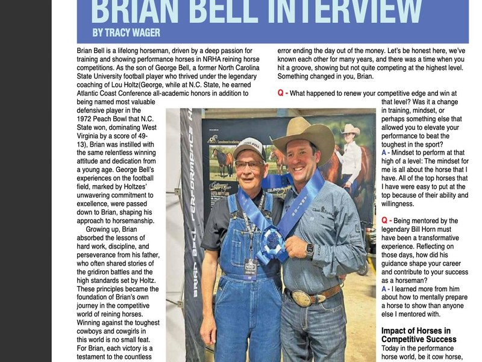

Brian with Wallace Wood · Cover Photo by Chelsea Schnieder
Brian Bell is a lifelong horseman, driven by a deep passion for training and showing performance horses in NRHA reining horse competitions. As the son of George Bell, a former North Carolina State University football player who thrived under the legendary coaching of Lou Holtz/George, while at N.C. State, he earned Atlantic Coast Conference all-academic honors in addition to being named most valuable defensive player in the 1972 Peach Bowl that N.C. State won, dominating West Virginia by a score of 49-13. Brian was instilled with the same relentless winning attitude and dedication from a young age. George Bell's experiences on the football field, marked by Holtzes' unwavering commitment to excellence, were passed down to Brian, shaping his approach to horsemanship. Growing up, Brian absorbed the lessons of hard work, discipline, and perseverance from his father, who often shared stories of the gridiron battles and the high standards set by Holtz. These principles became the foundation of Brian's own journey in the competitive world of reining horses. Winning against the toughest cowboys and cowgirls in this world is no small feat. For Brian, each victory is a testament to the countless hours of training, the unwavering dedication, and the special bond between rider and horse. It's a moment to savor, a reward for the relentless pursuit of excellence, and a reflection of the values instilled in him as a young man. Every win is a cherished memory, a culmination of hard work and the unique opportunity to ride and show a truly exceptional horse. For Brian Bell, it's not just about the competition; it's about living up to the legacy of determination and excellence passed down from his family, and celebrating the triumphs that make all the effort worthwhile.
Competitive Edge
Q
You scored a big win on Wallace Wood's beautiful mare Crystalized Whiskey at the 100X Cowtown reining show in Fort Worth, TX with the winning score of 229.5. The arena was packed with most of the top reiners in the world, executing endless runs with the slightest error ending the day out of the money. Let's be honest here, we've known each other for many years, and there was a time when you hit a groove, showing but not quite competing at the highest level. Something changed in you, Brian.
A
Mindset to perform at that high of a level. The mindset for me is all about the horse that I have. All of the top horses that I have were easy to put at the top because of their ability and willingness.
Q
What happened to renew your competitive edge and win at that level? Was it a change in training, mindset, or perhaps something else that allowed you to elevate your performance to beat the toughest in the sport?
A
Mindset to perform at that high of a level. The mindset for me is all about the horse that I have. All of the top horses that I have were easy to put at the top because of their ability and willingness.
Q
Being mentored by the legendary Bill Horn must have been a transformative experience. Reflecting on those days, how did his guidance shape your career and contribute to your success as a horseman?
A
I learned more from him about how to mentally prepare a horse to show than anyone else I mentored with.
Impact of Horses in Competitive Success
Today in the performance horse world, be it cow horse, reining, cutting, or even ranch events, the horses play a prominent role in determining who makes it to the winner's circle. You and the other top guns are all on a fairly level playing field of skill sets and abilities.
Q
How has this impacted the sport overall, and what is your process for finding the perfect horse? Is it more about the horse's bloodline, training, or a special connection that you look for?
A
It's a numbers game that you have to work to get on enough horses to try and find the best fit for your program.
Growth of Major Prize Money Events
Q
Boom! Seemingly out of nowhere, these 100X Shows are blowing up the market. Now in August, we have The Run for A Million and the 100X in Tulsa, Oklahoma. Would you ever have guessed there would be these huge prize money events in between the NRHA Derby and NRHA Futurity on the schedule? How do you think these events are changing the landscape of the sport, and what do they mean for competitors like you?
A
That 100x 4 yr old event allowed me to choose a show to show Crystalized Whiskey at that she would show against horses her own age and give it a fair advantage to showcase her ability.
Story Behind Crystalized Whiskey (Disco)
Crystalized Whiskey — what a beautiful mare. With an impressive Lifetime Earnings milestone of $621,041 in the NRHA for this young mare, only foaled in 2020; What is the new NRHA record this young horse currently holds after being undefeated at 4 of these major events (the 2023 All Star Reining Stakes Open Futurity, in Ocala Florida, the 2023 Congress Open Futurity, in Ohio, the 2023 NRHA Futurity in Oklahoma City, OK and now the 2024 100X Cowtown Classic Open Derby held in Fort Worth, TX)?
Q
This is her lifetime earnings which makes her the youngest and highest money earning mare in NRHA history — can you share more?
A
This is her lifetime earnings which makes her the youngest and highest money earning mare in NRHA history.
Q
Share with us the story of how you found this mare & how did she earn her barn name "Disco"?
A
Wallace found her on the internet and I drove to Purcell, OK to look at her. Wallace came up with the name Disco due to her being a perlino and the way her coat sparkled in the sun.
Q
What stood out to you about her when you first saw her, and what has the journey been like with her leading up to this big win?
A
She was stronger than the other babies that she was with. The journey has been truly a dream. She was easy to train and had a willing attitude and was a stand out the show pen since the beginning.
Q
How old was "Disco" when you first got her into your program?
A
Wallace purchased Disco as a yearling, she was picked up and brought to Bell Ranch and started in the winter.
Q
How did you meet Wallace Wood, owner of Crystalized Whiskey?
A
He sent me a horse named Halfbreed that needed to find a new career, we sold Halfbreed and found Disco.
Q
What is it like to have him as part of your team?
A
He has been nothing but a team player and allows me to do what I think the horse is ready for at whatever time it needs to be done.
Q
Are there any particular challenges or triumphs that have made this mare stand out even more in your career?
A
She is always good about letting you know what you need to do to get her ready.
Q
Your ongoing relationship with Kim Horn is another significant aspect of your journey. How has her advice and mentorship that she has given you recently helped in maintaining and enhancing your show performance and with Crystalized Whiskey?
A
Kim has been pretty good about reminding me of the things I already know and helped me trust my program.
Family
Q
Naike, is a large part of Brian Bell Performance horses. How did you meet her, and what is it like working with such a wonderful partner?
A
We met about 13 years before I married her in North Carolina when she worked for Mike McEntire. She is a great supporter and is my number one fan and biggest cheerleader.
Q
Carol & George Bell have always professed their love for horses and the sport of reining, do they still ride with you or have horses with in your program?
A
They are very active breeders and have several horses in training with me and show and win quite a bit each year.
Q
What does that mean to you to have them in your life?
A
These wins are more special when you have family around you.
Q
How are you managing keeping your horses well shod, and are you doing anything different today in your approach to working with the farrier?
A
Sergio Ponce has been my farrier for more than 15 years and we have found good communication is the best way to keeping my horse shod correctly.
Q
Your horses' nutrition is a crucial aspect of their performance and well-being. What does your feeding regimen include? Do you use hay, pellets, cubes, supplements, or a combination of these? How does this diet contribute to their success?
A
We feed a combination of alfalfa hay, grass hay and grain from BlueBonnet Feeds.
Three Essential Tips for Success
Q
Achieving success at the highest level requires more than just talent. Can you share three essential tips for our readers who aspire to reach the top in their disciplines? Specifically, how do mindset, horse care, and building a strong team play integral roles in this journey?
A
1. Bill Horn said you can speed it up in the last 5 minutes but there is no way in hell you can slow it down.
2. My dad told me when you are not practicing, someone else is, and when you meet them they will be tougher to beat than you thought.
3. Horse care is the big key. Without a sound horse you will have nothing to compete with mentally or physically.